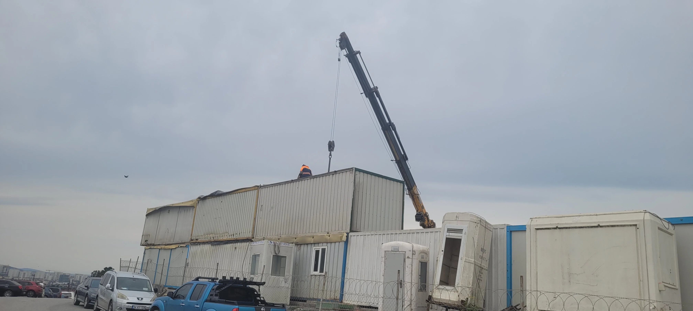
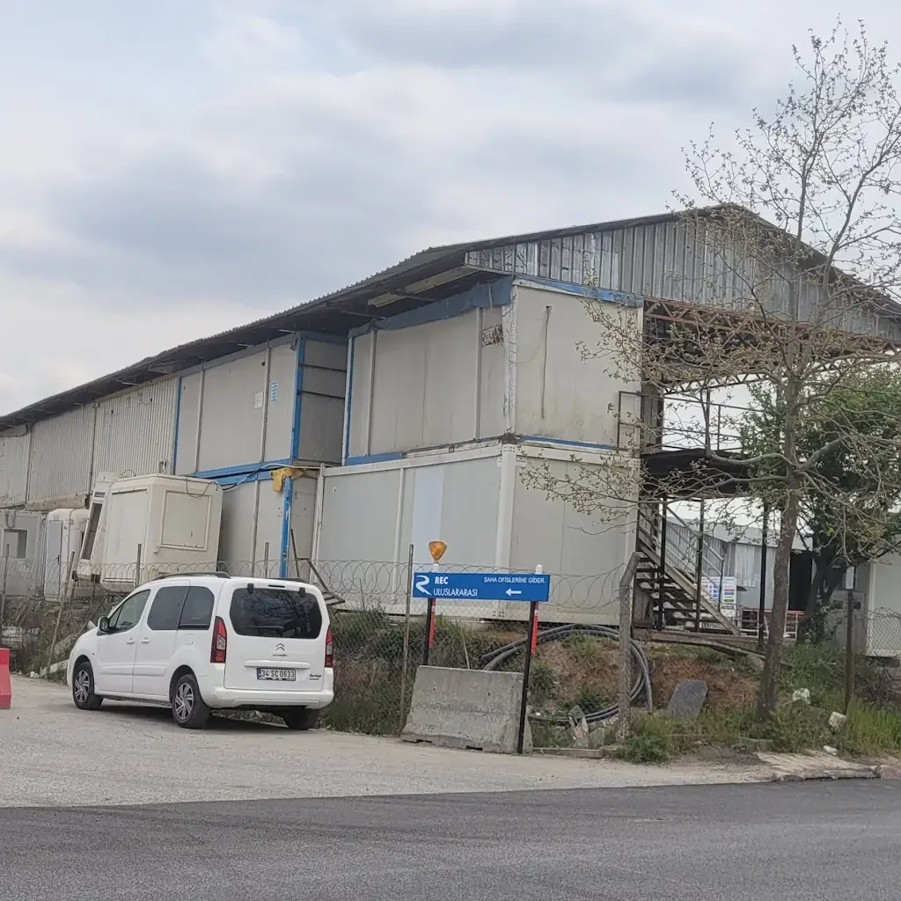

Saha Fotoğrafları Arşivi
M13 Yenidoğan - Söğütlüçeşme Metro Hattı inşaat sürecine ait tarih sıralı fotoğraf arşivi.

14 Temmuz 2026 • Emek İstasyonu

16 Temmuz 2026 • Emek İstasyonu

17 Temmuz 2026 • Emek İstasyonu

Nisan 2026 • Emek İstasyonu

Nisan 2026 • Emek İstasyonu

Nisan 2026 • Emek İstasyonu

Nisan 2026 • Emek İstasyonu